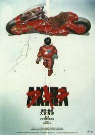

Your Name
Genre: Drama/Romance
Rating: ☆9.02/10Mitsuha Miyamizu, a high school girl, yearns to live the life of a boy in the bustling city of Tokyo—a dream that stands in stark contrast to her present life in the countryside. Meanwhile in the city, Taki Tachibana lives a busy life as a high school student while juggling his part-time job and hopes for a future in architecture.Your Name, revolves around Mitsuha and Taki's actions, which begin to have a dramatic impact on each other's lives, weaving them into a fabric held together by fate and circumstance.
The Silent Voice
Genre: Drama
Rating: ☆9.01/10As a wild youth, elementary school student Shouya Ishida sought to beat boredom in the cruelest ways. When the deaf Shouko Nishimiya transfers into his class, Shouya and the rest of his class thoughtlessly bully her for fun. However, when her mother notifies the school, he is singled out and blamed for everything done to her. With Shouko transferring out of the school, Shouya is left at the mercy of his classmates. He is heartlessly ostracized all throughout elementary and middle school, while teachers turn a blind eye.A Silent Voice tells the heartwarming tale of Shouya's reunion with Shouko and his honest attempts to redeem himself, all while being continually haunted by the shadows of his past.
The Last Naruto
Genre: Action/Romance
Rating: ☆7.77/10Two years have passed since the end of the Fourth Great Ninja War. Konohagakure has remained in a state of peace and harmony—until Sixth Hokage Kakashi Hatake notices the moon is dangerously approaching the Earth, posing the threat of planetary ruin.Amidst the grave ordeal, the Konoha is invaded by a new evil, Toneri Oosutuski, who suddenly abducts Hinata Hyuuga's little sister Hanabi. Kakashi dispatches a skilled ninja team comprised of Naruto Uzumaki, Sakura Haruno, Shikamaru Nara, Sai, and Hinata in an effort to rescue Hanabi from the diabolical clutches of Toneri. However, during their mission, the team faces several obstacles that challenge them, foiling their efforts.
Mewtwo Strikes Back
Genre: Action/Adventure
Rating: ☆8.27/10Several years later, Mewtwo has fully awakened from a long slumber in a laboratory on New Island, and learns of his origin as Mew's clone from Dr. Fuji. Infuriated that Fuji and his colleagues see him as nothing more than an experiment, he unleashes his psychic powers and destroys the laboratory, killing Fuji and the rest of the scientists. Giovanni, witnessing the carnage afar, approaches and convinces Mewtwo to work with him to hone his powers. However, after Mewtwo learns of his purpose to be a weapon for Giovanni's benefit, he escapes back to New Island where he plots his revenge against humanity.

Grave of the Fireflies
Genre: Drama
Rating: ☆8.51/10As World War II reaches its conclusion in 1945, Japan faces widespread destruction in the form of American bombings, devastating city after city. Hotaru no Haka, also known as Grave of the Fireflies, is the story of Seita and his sister Setsuko, two Japanese children whose lives are ravaged by the brutal war. They have lost their mother, their father, their home, and the prospect of a bright future—all tragic consequences of the war.Now orphaned and homeless, Seita and Setsuko have no choice but to drift across the countryside, beset by starvation and disease

Howl's Moving Castle
Genre: Adventure/Drama
Rating: ☆8.44/10That jumbled piece of architecture, that cacophony of hissing steam and creaking joints, with smoke billowing from it as it moves on its own... That castle is home to the magnificent wizard Howl, infamous for both his magical prowess and for being a womanizer—or so the rumor goes in Sophie Hatter's small town. Sophie, as the plain daughter of a hatmaker, does not expect much from her future and is content with working hard in the shop.In an endeavor to return to normal, Sophie must accompany Howl and a myriad of eccentric companions—ranging from a powerful fire demon to a hopping scarecrow—in his living castle, on a dangerous adventure as a raging war tears their kingdom apart.
Princess Mononoke
Genre: Action/Fantasy
Rating: ☆8.67/10Princess Mononoke is a tale depicting the connection of technology and nature, while showing the path to harmony that could be achieved by mutual acceptance.When an Emishi village is attacked by a fierce demon boar, the young prince Ashitaka puts his life at stake to defend his tribe. With its dying breath, the beast curses the prince's arm, granting him demonic powers while gradually siphoning his life away. Instructed by the village elders to travel westward for a cure, Ashitaka arrives at Tatara, the Iron Town, where he finds himself embroiled in a fierce conflict:
-
Children of the Sea
Genre: Drama/Mystery
Rating: ☆7.23/10
One summer vacation, Ruka meets two boys, "Umi" and "Sora," whose upbringing contains strange and wonderful secrets. Drawn to their beautiful swimming, almost more like flying, Ruka and the adults who know them are intertwined in a complex mesh...Meanwhile, an unexplained anomaly is occurring all over the world: fish are disappearing. Thus begins a marine adventure of boys and girls to captivate all the senses!
-
Akira
Genre: Action/Sci-Fi
Rating: ☆8.16/10
Japan, 1988. An explosion caused by a young boy with psychic powers tears through the city of Tokyo and ignites the fuse that leads to World War III. In order to prevent any further destruction, he is captured and taken into custody, never to be heard from again. Now, in the year 2019, a restored version of the city known as Neo-Tokyo—an area rife with gang violence and terrorism against the current government—stands in its place. Here, Shoutarou Kaneda leads "the Capsules," a group of misfits known for riding large, custom motorcycles and being in constant conflict with their rivals "the Clowns."
-
Accel World:Infinite Burst
Genre: Action/Sci-Fi
Rating: ☆6.69/10
In 2046, many aspects of life are carried out on a virtual network. No matter how advanced the time becomes, however, bullying never disappears. Haruyuki is one of the bullied students. However, one day he is contacted by Kuroyukihime, the most famous person in the school. "Wouldn't you like to 'accelerate' and go further ahead, boy?" Haruyuki is introduced to the "Accel World" and decides to fight as Kuroyukihime's knight.
-
 Ghost in the Shell
Ghost in the Shell
Genre: Action/Sci-Fi
Rating: ☆8.30/10
In the year 2029, Niihama City has become a technologically advanced metropolis. Due to great improvements in cybernetics, its citizens are able to replace their limbs with robotic parts. The world is now more interconnected than ever before, and the city's Public Security Section 9 is responsible for combating corruption, terrorism, and other dangerous threats following this shift towards globalization.The strong-willed Major Motoko Kusanagi of Section 9 spearheads a case involving a mysterious hacker known only as the "Puppet Master," who leaves a trail of victims stripped of their memories. Like many in this futuristic world, the Puppet Master's body is almost entirely robotic, giving them incredible power.
-
One Piece Z
Genre: Action/Comedy
Rating: ☆8.21/10
The Straw Hat Pirates enter the rough seas of the New World in search of the hidden treasures of the Pirate King, Gol D. Roger－One Piece. On their voyage, the pirates come across a terrifying, powerful man, former Marine Admiral Z.Z is accused of having stolen the "Dyna Stones", weapons believed to have the power to shake up the New World. The Marine Headquarters believes Z is about to use it to end the pirate era, and with it, the lives of many innocent people. In fear of such a phenomenal event, marines start to take action against the former admiral.
-
 Spirited Away
Spirited Away
Genre: Adventure/Drama
Rating: ☆8.85/10
Stubborn, spoiled, and naïve, 10-year-old Chihiro Ogino is less than pleased when she and her parents discover an abandoned amusement park on the way to their new house. Cautiously venturing inside, she realizes that there is more to this place than meets the eye, as strange things begin to happen once dusk falls. Ghostly apparitions and food that turns her parents into pigs are just the start—Chihiro has unwittingly crossed over into the spirit world.Vivid and intriguing, Spirites Away tells the story of Chihiro's journey through an unfamiliar world as she strives to save her parents and return home.
-
Sword of the Stranger
Genre: Action/Adventure
Rating: ☆8.33/10
In the Sengoku period of Japan, a young orphan named Kotarou and his dog Tobimaru steal from unsuspecting villagers in order to make ends meet. However, Kotarou is forced to remain on the run when he finds himself being hunted down by assassins sent by China's Ming Dynasty for mysterious reasons not involving his petty crimes.As the three set out on a perilous journey, it soon becomes evident that their path is riddled with danger, as the Ming Dynasty has now sent a terrifying swordsman after them to capture Kotarou and fulfill a certain prophecy.
-
Sora no Otoshimono
Genre: Comedy/Sci-Fi
Rating: ☆7.40/10
Ever since he was a child, Tomoki Sakurai has always woke up with tears after a dream of an angel. His childhood friend Sohara Mitsuki worries about this and decides to seek the help of Eishirou Sugata, an eccentric sky maniac. He concludes that Tomoki's dream is undoubtedly connected to what is known as the New World, a floating anomaly that scientists have failed to understand.Sora no Otoshimono follows the daily activities of the New World Discovery Club as they begin to learn more about the Angeloids that have arrived on Earth.